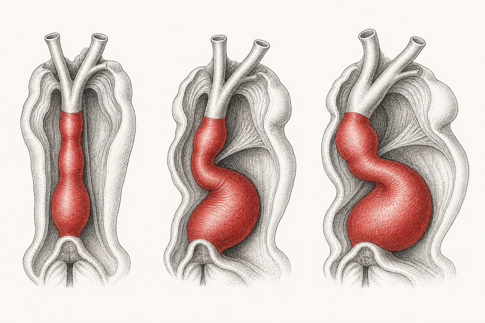
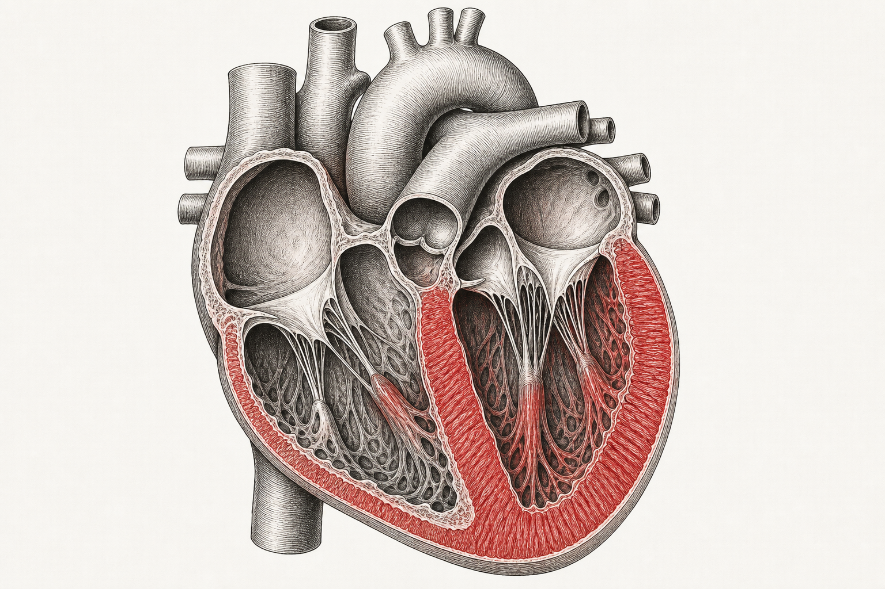
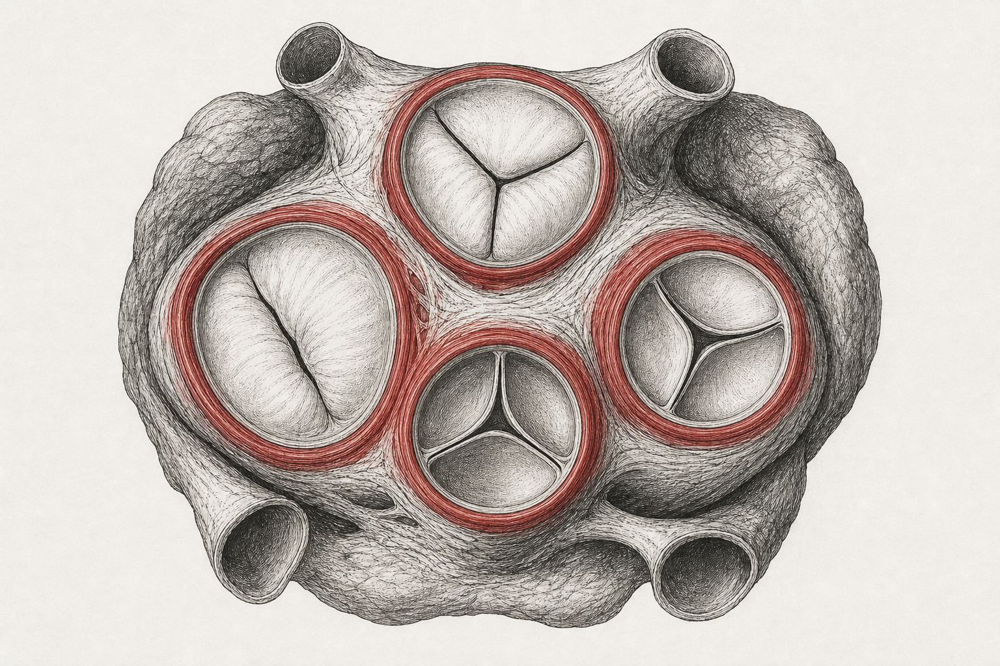
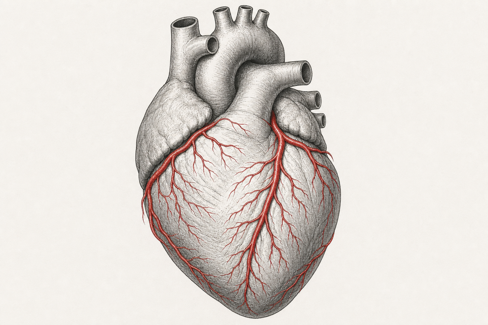
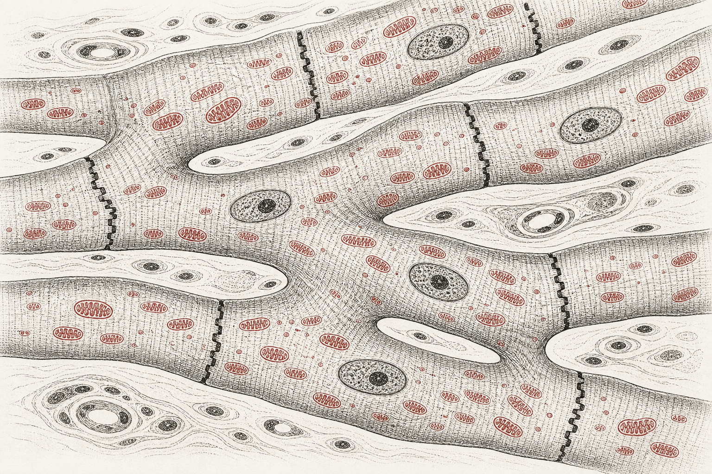
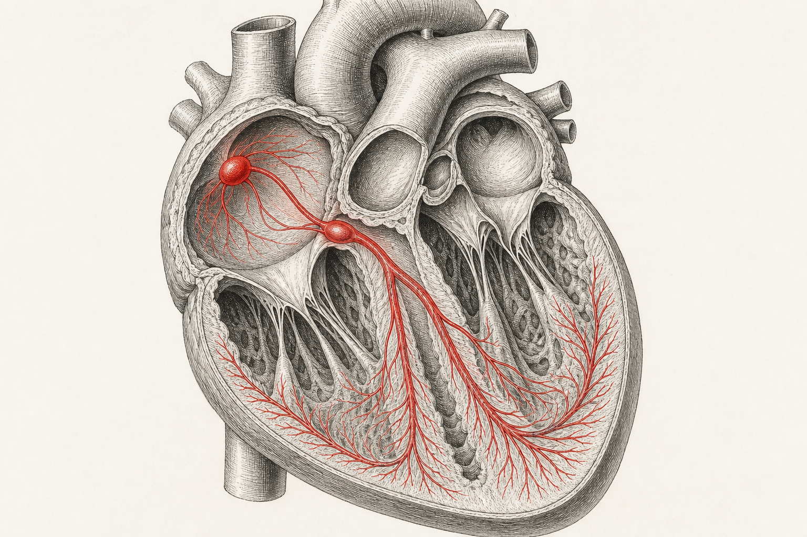
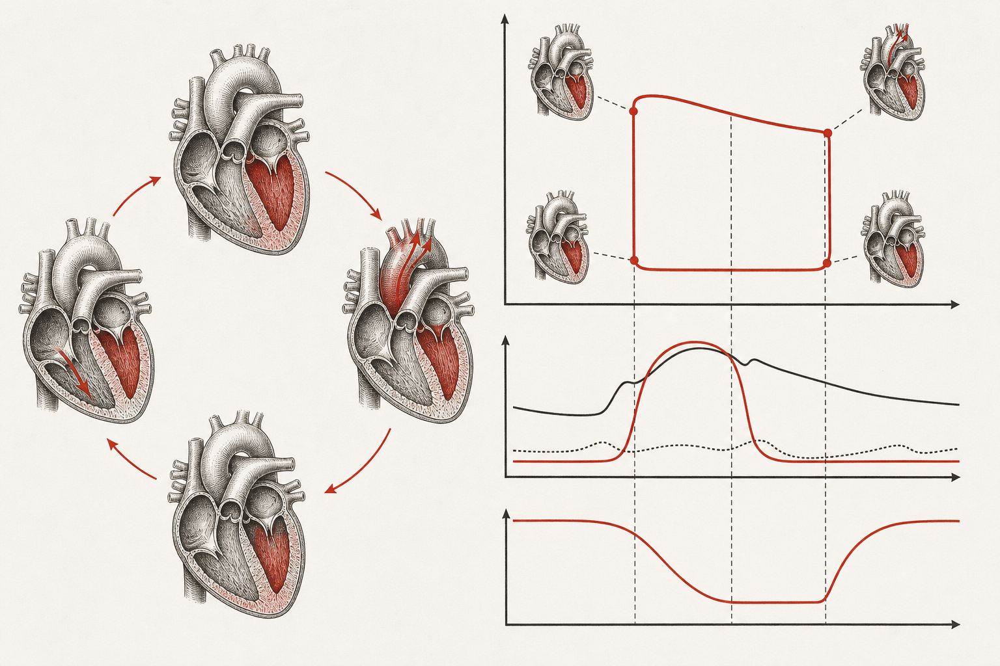
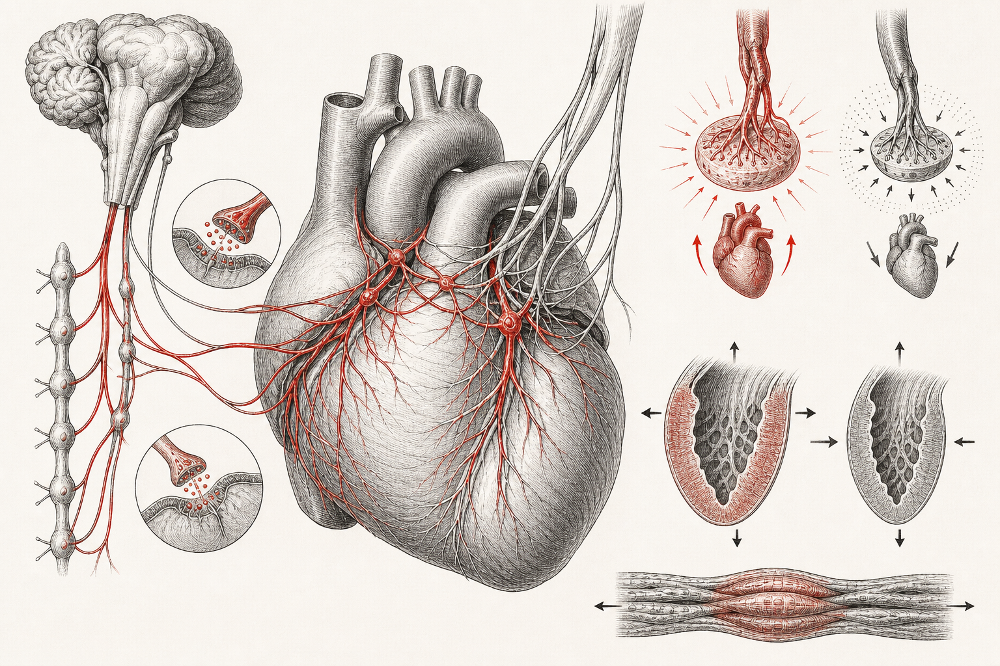

СЕРДЦЕ
Сердце: строение, развитие и функция
Полный учебный модуль о сердце — от закладки в эмбрионе до электрофизиологии, гемодинамики и клиники. Сердце сокращается около 100 000 раз в сутки, за 75 лет совершает почти 3 миллиарда ударов и прокачивает кровь через ~100 000 км сосудов. Ниже — восемь частей: эмбриология, макроанатомия, коронарное русло, гистология, электрофизиология, механика, регуляция и прикладные вопросы.
Эмбриология и развитие сердца
01Закладка сердца
Сердце развивается из мезодермы. На 18–19-й день в краниальной части зародышевого диска, кпереди от нервной пластинки, обособляется кардиогенная область — скопление клеток-предшественников, образующих парные ангиогенные тяжи. В них появляются полости, и тяжи превращаются в две эндокардиальные трубки.
При латеральном сворачивании зародыша две трубки сближаются по средней линии и сливаются в единую первичную сердечную трубку. Уже на этом этапе вокруг эндокарда формируется миоэпикардиальная мантия — зачаток миокарда и эпикарда, а между ними — желеобразный слой (cardiac jelly). К 22-му дню трубка начинает спонтанно сокращаться, а к 24–25-му дню по ней идёт направленный ток крови.
В сердечной трубке выделяют последовательные расширения (от венозного конца к артериальному): венозный синус (sinus venosus), первичное предсердие, первичный желудочек, артериальный конус (bulbus cordis) и артериальный ствол (truncus arteriosus). Из этих отделов разовьются все камеры и крупные сосуды.
02Сердечная петля
Трубка растёт быстрее, чем окружающая её полость перикарда, поэтому с 23-го по 28-й день она изгибается — формируется сердечная петля (cardiac looping). Артериальный отдел смещается вентрально, каудально и вправо, а венозный — дорсально, краниально и влево. В результате будущие предсердия оказываются позади и выше желудочков, а сердце приобретает асимметрию. Направление петли (вправо, D-петля) задаётся генами латерализации; нарушение даёт зеркальное (L-петля) сердце и сложные пороки.
При аномальном повороте петли верхушка сердца обращена вправо — декстрокардия. Изолированная декстрокардия часто сочетается с тяжёлыми пороками; при полном зеркальном расположении органов (situs inversus totalis) сердце может быть анатомически нормальным, но «отражённым».

03Формирование перегородок и камер
С 27-го дня по конец 5-й недели идёт септация — разделение единого просвета на четыре камеры.
Предсердия. От крыши общего предсердия растёт серповидная первичная перегородка (septum primum) к эндокардиальным подушкам. Отверстие под её краем — первичное отверстие (ostium primum) — закрывается, но раньше в верхней части septum primum появляется вторичное отверстие (ostium secundum), сохраняющее сообщение. Справа от него нарастает более жёсткая вторичная перегородка (septum secundum) с овальным окном. Вместе они образуют клапанный овальный канал: кровь идёт справа налево, но обратный ток перекрывается.
Предсердно-желудочковый канал. Дорсальная и вентральная эндокардиальные подушки срастаются, разделяя общий канал на правое и левое отверстия и формируя основу атриовентрикулярных клапанов.
Желудочки. Снизу растёт мышечная часть межжелудочковой перегородки; верхнее межжелудочковое отверстие закрывается перепончатой частью, образованной тканью эндокардиальных подушек и перегородки артериального конуса. Незаращение этой зоны — самый частый врождённый порок (ДМЖП).
ДМПП (дефект межпредсердной перегородки) чаще всего относится к типу ostium secundum. ДМЖП — самый частый врождённый порок сердца, обычно в перепончатой части. Дефекты эндокардиальных подушек (атриовентрикулярный канал) типичны для синдрома Дауна.
04Развитие клапанов и крупных сосудов
Атриовентрикулярные клапаны формируются из эндокардиальных подушек: ткань вокруг отверстий разрыхляется, подрывается током крови и превращается в створки, удерживаемые хордами и сосочковыми мышцами (вырост миокарда желудочка).
Артериальный ствол и конус. В truncus arteriosus и bulbus cordis закладываются спиральные конотрункальные гребни, в формировании которых ключевую роль играют клетки нервного гребня. Срастаясь по спирали, они образуют аортолёгочную перегородку, разделяющую общий ствол на аорту и лёгочный ствол; спиральный ход объясняет, почему сосуды перекручены друг относительно друга. На концах формируются полулунные клапаны.
Нарушение миграции клеток нервного гребня даёт группу пороков: тетрада Фалло, транспозиция магистральных сосудов, общий артериальный ствол, аномалии дуги аорты. Многие связаны с делецией 22q11 (синдром Ди Джорджи).
05Кровообращение плода и перестройка после рождения
У плода лёгкие не дышат, а кислород поступает из плаценты, поэтому кровь в обход лёгких направляется через три шунта:
- Венозный проток (ductus venosus) — проводит богатую кислородом кровь от пупочной вены в нижнюю полую, минуя печень.
- Овальное окно (foramen ovale) — пропускает кровь из правого предсердия сразу в левое, минуя лёгочный круг.
- Артериальный проток (ductus arteriosus) — соединяет лёгочный ствол с аортой, сбрасывая кровь мимо нерасправленных лёгких.
С первым вдохом лёгочное сопротивление резко падает, кровоток через лёгкие возрастает, давление в левом предсердии превышает правое — и лоскут septum primum прижимается к septum secundum, функционально закрывая овальное окно (анатомически зарастает за недели–месяцы, оставляя fossa ovalis). Артериальный проток спазмируется под действием кислорода и падения простагландинов, превращаясь в lig. arteriosum; венозный проток — в lig. venosum. Пупочные сосуды облитерируются.
Макроскопическая анатомия
06Расположение и средостение
Сердце лежит в грудной полости медиально между лёгкими, в среднем средостении (mediastinum). Оно заключено в собственное пространство — полость перикарда. Задняя поверхность прилежит к телам грудных позвонков (Th5–Th8), передняя — к грудине и рёберным хрящам.
Верхняя поверхность — основание (basis cordis) — обращена кзади и вправо, к ней прикреплены крупные сосуды (полые и лёгочные вены, аорта, лёгочный ствол); она проецируется на уровне III рёберного хряща. Заострённая верхушка (apex cordis) направлена влево, вниз и кпереди, лежит в V межреберье примерно на 8–9 см левее срединной линии. Здесь пальпируется и выслушивается верхушечный толчок. Правая половина сердца отклонена кпереди, левая — кзади; это важно для интерпретации аускультации и рентгенограмм.
07Форма и размеры
Сердце по форме напоминает уплощённый конус (сосновую шишку): широкое у основания и сужающееся к верхушке. Размеры — около 12 см длины, 8 см ширины и 6 см толщины (примерно с кулак владельца). Масса женского сердца ≈ 250–300 г, мужского ≈ 300–350 г.
Сердечная мышца, как и скелетная, отвечает на длительную нагрузку гипертрофией — увеличением размеров клеток без роста их числа. Поэтому «спортивное сердце» крупнее и работает экономнее. Однако увеличение бывает и патологическим: при гипертрофической кардиомиопатии — опасной причине внезапной смерти у молодых, или при перегрузке давлением (гипертония, аортальный стеноз).
08Камеры и круги кровообращения
Сердце состоит из четырёх камер: двух верхних предсердий (atria) и двух нижних желудочков (ventriculi). Предсердия принимают кровь и доталкивают её в желудочки; желудочки — главные нагнетающие камеры.
Работают два последовательных контура. Малый (лёгочный) круг: правый желудочек → лёгочный ствол → лёгочные артерии (единственные артерии с венозной кровью) → капилляры лёгких (газообмен) → лёгочные вены (единственные вены с артериальной кровью) → левое предсердие. Большой (системный) круг: левый желудочек → аорта → артерии тела → капилляры (обмен) → вены → верхняя и нижняя полые вены → правое предсердие. Оба желудочка выбрасывают одинаковый ударный объём, но левый создаёт значительно большее давление.

09Перикард и оболочки
Сердце окружено перикардом (околосердечной сумкой). Он состоит из наружного фиброзного перикарда (плотная соединительная ткань, фиксирует сердце и ограничивает его переполнение) и внутреннего серозного перикарда. Серозный перикард имеет два листка: париетальный, сращённый с фиброзным, и висцеральный — эпикард, покрывающий само сердце. Между ними — полость перикарда с серозной жидкостью-смазкой, уменьшающей трение при сокращениях.
Накопление жидкости в полости перикарда (выпот, кровь) сдавливает сердце — тампонада: камеры не наполняются, выброс падает. При остром кровотечении критичными бывают всего ~100–200 мл. Перикардит (воспаление листков) даёт боль в груди и характерный шум трения перикарда. Лечение тампонады — пункция/дренирование (перикардиоцентез).
10Слои стенки сердца
Стенка сердца состоит из трёх слоёв (снаружи внутрь):
- Эпикард (epicardium) — он же висцеральный листок серозного перикарда; мезотелий на рыхлой соединительной ткани, содержит коронарные сосуды и жир.
- Миокард (myocardium) — средний, самый толстый слой из кардиомиоцитов на коллагеновом каркасе. Волокна закручены спиралью («восьмёрками»), что эффективнее линейного хода. Миокард левого желудочка в 2,5–3 раза толще правого.
- Эндокард (endocardium) — внутренняя выстилка из эндотелия, продолжающаяся в сосуды; покрывает клапаны. Эндотелий не пассивен: секретирует эндотелины и регулирует сокращение и рост кардиомиоцитов.
11Поверхностные образования
У каждого предсердия есть листовидное ушко (auricula) — тонкостенный резервуар, дополнительно вмещающий кровь. На поверхности проходят заполненные жиром борозды (sulci), в которых лежат коронарные сосуды: глубокая венечная борозда (sulcus coronarius) отделяет предсердия от желудочков, а передняя и задняя межжелудочковые борозды идут между желудочками.
Ушко левого предсердия — частое место образования тромбов при фибрилляции предсердий: застой крови в трабекулярном кармане способствует тромбозу, а оторвавшийся тромб вызывает кардиоэмболический инсульт. Поэтому при ФП назначают антикоагулянты, а иногда выполняют окклюзию ушка.
12Перегородки и сердечный скелет
Межпредсердная перегородка разделяет предсердия; на ней — овальная ямка (fossa ovalis), след фетального овального окна. Межжелудочковая перегородка (septum interventriculare) толстая, преимущественно мышечная, с тонкой перепончатой частью вверху. Предсердно-желудочковая перегородка несёт четыре отверстия с клапанами.
Сердечный скелет (skeleton cordis) — каркас из плотной соединительной ткани: четыре фиброзных кольца вокруг отверстий служат опорой клапанов и точками прикрепления миокарда, а также образуют электрический изолятор между предсердиями и желудочками — импульс проходит только через АВ-узел.
13Правое предсердие
Принимает венозную кровь из трёх источников: верхней полой вены (от головы, шеи, рук, груди), нижней полой вены (от тела ниже диафрагмы) и венечного синуса (от миокарда). Задняя стенка гладкая, передняя и ушко несут гребенчатые мышцы (mm. pectinati); границу образует пограничный гребень (crista terminalis). Из правого предсердия кровь идёт в правый желудочек через трёхстворчатый клапан.
14Правый желудочек
Получает кровь через трёхстворчатый клапан. Створки удерживаются сухожильными хордами (chordae tendineae, ~80 % коллагена), идущими к трём сосочковым мышцам (передней, задней, перегородочной). Стенки выстланы мясистыми трабекулами (trabeculae carneae). Особый тяж — модераторная (перегородочно-краевая) полоса — укрепляет стенку и несёт часть правой ножки пучка Гиса к передней сосочковой мышце. Выброс идёт в лёгочный ствол через лёгочный клапан.
15Левое предсердие
Принимает богатую кислородом кровь по четырём лёгочным венам. Стенка гладкая (гребенчатые мышцы — только в ушке). В конце диастолы желудочка предсердие сокращается, добавляя ~20 % наполнения («предсердный довесок»). Кровь идёт в левый желудочек через митральный клапан.
16Левый желудочек
Главная нагнетающая камера большого круга с самым толстым миокардом. Имеет мясистые трабекулы, но модераторной полосы нет. Митральный клапан связан хордами с двумя сосочковыми мышцами (передней и задней). Выброс — в аорту через аортальный клапан.
17Клапаны сердца
Четыре клапана обеспечивают однонаправленный ток: два предсердно-желудочковых (атриовентрикулярных) и два полулунных. На поперечном срезе чуть выше предсердно-желудочковой перегородки все они видны в одной плоскости — основании сердца.
Трёхстворчатый клапан · valva tricuspidalis
Между правым предсердием и желудочком; три створки, связанные хордами с тремя сосочковыми мышцами.
Лёгочный клапан · valva trunci pulmonalis
Полулунный, у основания лёгочного ствола; три карманоподобные створки. Хорд и сосочковых мышц у полулунных клапанов нет — они закрываются, заполняясь обратным током.
Митральный (двустворчатый) · valva mitralis
Между левым предсердием и желудочком; две створки, связанные хордами с двумя сосочковыми мышцами. Выдерживает самое высокое давление.
Аортальный клапан · valva aortae
Полулунный, у основания аорты; три створки (в их синусах начинаются коронарные артерии).
| Клапан | Створок | Хорды | Открыт в |
|---|---|---|---|
| Трёхстворчатый | 3 | да | систолу предсердий / диастолу желудочка |
| Митральный | 2 | да | диастолу желудочка |
| Лёгочный | 3 | нет | систолу желудочка |
| Аортальный | 3 | нет | систолу желудочка |
Стеноз — клапан ригиден и сужен (кальциноз; аортальный стеноз — у ~2 % людей старше 65). Недостаточность (регургитация) — клапан не смыкается, кровь течёт обратно (частая митральная регургитация). Пролапс — провисание створки при удлинении/разрыве хорд. Гибель сосочковой мышцы при инфаркте — острая митральная недостаточность, требующая экстренной операции. Выявляют аускультацией (шумы) и ЭхоКГ.

Коронарное кровообращение
18Коронарные артерии
Коронарные артерии начинаются от синусов аорты сразу над аортальным клапаном — это первые ветви аорты. Особенность кровотока: коронарные артерии заполняются преимущественно в диастолу, потому что в систолу сокращающийся миокард пережимает интрамуральные сосуды. Поэтому тахикардия (короткая диастола) ухудшает коронарную перфузию.
Левая коронарная артерия (a. coronaria sinistra) коротким стволом делится на:
- Переднюю межжелудочковую ветвь — ПМЖВ, она же LAD (left anterior descending): идёт по передней межжелудочковой борозде, кровоснабжает переднюю стенку ЛЖ, верхушку и передние ⅔ перегородки. Клиническое прозвище — «вдоводел» (widow-maker) за тяжесть инфарктов при её окклюзии.
- Огибающую ветвь (a. circumflexa): идёт по венечной борозде влево и кзади, питает боковую и заднюю стенки ЛЖ и левое предсердие.
Правая коронарная артерия (a. coronaria dextra) идёт по венечной борозде вправо; кровоснабжает правое предсердие, правый желудочек, заднюю часть перегородки и — что важно — проводящую систему (у ~60 % людей даёт ветвь к СА-узлу, у большинства — к АВ-узлу). От неё отходит задняя межжелудочковая ветвь.
Тип кровоснабжения (доминантность) определяется тем, какая артерия даёт заднюю межжелудочковую ветвь: правый тип (~70 %), левый (~10 %) или сбалансированный (~20 %).

19Коронарные вены
Венозная кровь миокарда оттекает преимущественно в венечный синус (sinus coronarius) на задней поверхности, впадающий в правое предсердие. Главные притоки: большая вена сердца (рядом с ПМЖВ и огибающей), средняя и малая вены сердца. Часть крови оттекает напрямую в камеры через мельчайшие вены Тебезия.
20Анастомозы и микроциркуляция
Между коронарными ветвями есть анастомозы, но в норме они мелкие и функционально незначимые — поэтому коронарные артерии считают «функционально концевыми»: острая закупорка ведёт к инфаркту снабжаемой зоны. При медленном развитии стеноза анастомозы могут разрастаться в коллатерали, частично компенсируя кровоток.
Капиллярная сеть миокарда очень густая — почти один капилляр на кардиомиоцит, что отражает высокую кислородную потребность. Экстракция кислорода из коронарной крови максимальна уже в покое (~70–80 %), поэтому единственный способ увеличить доставку при нагрузке — повысить кровоток за счёт коронарной вазодилатации.
Ишемическая болезнь сердца возникает при сужении коронарных артерий атеросклеротической бляшкой. Преходящее несоответствие доставки и потребности даёт стенокардию (давящая боль при нагрузке, проходит в покое). Полная окклюзия (чаще из-за тромба на разорвавшейся бляшке) → инфаркт миокарда: ишемия и гипоксия убивают участок мышцы. Помощь — восстановление кровотока: ЧКВ (стентирование) или тромболизис; при многососудистом поражении — аортокоронарное шунтирование (АКШ).
Гистология и ультраструктура
21Кардиомиоцит
Кардиомиоцит (сердечный миоцит) — короткая (~100 мкм) ветвящаяся клетка с одним-двумя центральными ядрами, в отличие от длинных многоядерных скелетных волокон. Цитоплазма заполнена миофибриллами с поперечной исчерченностью и огромным числом митохондрий (до ~35 % объёма) — энергия почти полностью добывается аэробно, поэтому сердце так чувствительно к гипоксии. Кардиомиоциты практически не делятся у взрослого: погибшую при инфаркте мышцу замещает рубец, а не новые клетки.
Около 1 % кардиомиоцитов — специализированные проводящие (пейсмекерные) клетки: они бедны миофибриллами, зато способны к спонтанной деполяризации и быстрому проведению импульса.
22Вставочные диски и функциональный синцитий
Соседние кардиомиоциты соединены вставочными дисками (disci intercalati) — ступенчатыми контактами, видимыми как тёмные поперечные линии. В них два типа соединений:
- Десмосомы и пояски слипания — механически скрепляют клетки, передают силу сокращения и не дают им разорваться.
- Щелевые контакты (nexus / gap junctions) — каналы (коннексоны), пропускающие ионы напрямую из клетки в клетку, поэтому возбуждение мгновенно распространяется по миокарду.
Благодаря щелевым контактам миокард ведёт себя как функциональный синцитий: предсердия возбуждаются и сокращаются как единое целое, затем — желудочки. Это объясняет закон «всё или ничего» для сердечной мышцы.

23Саркомер и электромеханическое сопряжение
Сократительная единица — саркомер между Z-линиями, образованный толстыми (миозин) и тонкими (актин) филаментами; их скольжение укорачивает клетку (теория скользящих нитей). На актине лежат регуляторные белки тропонин и тропомиозин.
Сопряжение возбуждения и сокращения. Потенциал действия по сарколемме и Т-трубочкам доходит вглубь клетки. Это открывает потенциалзависимые L-тип Ca²⁺-каналы, впуская немного кальция извне. Этот «триггерный» кальций активирует рианодиновые рецепторы саркоплазматического ретикулума — происходит кальций-индуцированное высвобождение кальция. Ионы Ca²⁺ связываются с тропонином, тропомиозин смещается, открывая участки актина для миозиновых мостиков — мышца сокращается. Расслабление наступает, когда Ca²⁺ откачивается обратно в ретикулум (насосом SERCA) и наружу (Na⁺/Ca²⁺-обменником).
В отличие от скелетной мышцы, сердечной для сокращения нужен вход кальция снаружи через L-каналы. Поэтому блокаторы кальциевых каналов снижают силу и частоту сокращений, а изменения уровня кальция и работы Na⁺/K⁺- и Na⁺/Ca²⁺-обмена напрямую влияют на сократимость (механизм действия сердечных гликозидов).
Электрофизиология
24Проводящая система
Ритм задаёт синусно-предсердный (СА) узел (nodus sinuatrialis) — у устья верхней полой вены в стенке правого предсердия. Это нормальный водитель ритма: его клетки деполяризуются спонтанно с наибольшей частотой (~60–100/мин). Импульс расходится по предсердиям (в т.ч. по пучку Бахмана к левому) и сходится к атриовентрикулярному (АВ) узлу.
АВ-узел (nodus atrioventricularis) — единственные «ворота» для импульса в желудочки (остальное изолирует сердечный скелет). Здесь проведение замедляется (задержка ~100 мс): предсердия успевают опорожниться и дозаполнить желудочки до их сокращения. Далее — пучок Гиса, его правая и левая ножки по перегородке и сеть волокон Пуркинье, быстро разносящих возбуждение по миокарду желудочков снизу вверх (от верхушки к основанию).
| Узел/структура | Собственная частота | Роль |
|---|---|---|
| СА-узел | 60–100/мин | основной пейсмекер |
| АВ-узел | 40–60/мин | задержка, резервный пейсмекер |
| Пучок/Пуркинье | 20–40/мин | проведение, аварийный пейсмекер |
Чем дистальнее, тем медленнее собственный ритм — поэтому в норме «командует» СА-узел (доминирование быстрейшего). Если он отказывает, ритм перехватывают нижележащие центры (выскальзывающие ритмы), но с меньшей частотой.

25Потенциалы действия
Есть два принципиально разных типа потенциала действия.
Пейсмекерные клетки (СА- и АВ-узел)
Нет стабильного покоя: мембрана медленно самопроизвольно деполяризуется в фазу предпотенциала за счёт «забавного» тока I_f (вход Na⁺) и кальциевых токов. Достигнув порога, открываются Ca²⁺-каналы — возникает разряд; реполяризацию даёт выход K⁺. Крутизна предпотенциала определяет частоту ритма и регулируется вегетативной нервной системой.
Рабочие кардиомиоциты
Имеют характерную форму с плато и 5 фаз:
- Фаза 0 — быстрая деполяризация: лавинообразный вход Na⁺.
- Фаза 1 — ранняя короткая реполяризация (выход K⁺, закрытие Na⁺).
- Фаза 2 — плато: вход Ca²⁺ через L-каналы уравновешивает выход K⁺; длится ~0,2 с и обеспечивает длительное сокращение.
- Фаза 3 — реполяризация: Ca²⁺-каналы закрываются, нарастает выход K⁺.
- Фаза 4 — стабильный потенциал покоя (~−90 мВ), поддерживается K⁺-токами и Na⁺/K⁺-насосом.
26Ионные токи и рефрактерность
Плато удлиняет потенциал действия миокарда до ~250–300 мс — почти на всю длительность сокращения. Поэтому абсолютный рефрактерный период очень длинный: клетка не отвечает на новый стимул, пока не расслабится. Это защищает сердце от тетануса (слитного непрерывного сокращения) — иначе насос остановился бы. Длинная рефрактерность также ограничивает максимальную частоту и препятствует циркуляции возбуждения.
Нарушения ионных токов и проведения дают аритмии: тахи- и брадикардии, экстрасистолы, фибрилляцию предсердий (хаотичное возбуждение предсердий), опасную фибрилляцию желудочков (требует дефибрилляции). Наследственные каналопатии (синдром удлинённого QT, Бругада) повышают риск внезапной смерти. Блокады возникают при нарушении проведения в АВ-узле или ножках пучка.
27ЭКГ — как читать
Электрокардиограмма регистрирует суммарную электрическую активность сердца с поверхности тела. Стандартно снимают 12 отведений (3 стандартных, 3 усиленных от конечностей, 6 грудных), дающих «вид» с разных направлений. На кривой выделяют:
- Зубец P — деполяризация (возбуждение) предсердий.
- Интервал PQ(PR) — проведение через АВ-узел (задержка); в норме 120–200 мс.
- Комплекс QRS — деполяризация желудочков (реполяризация предсердий скрыта в нём); в норме <120 мс.
- Сегмент ST — фаза плато, полное возбуждение желудочков; ключевой при ишемии.
- Зубец T — реполяризация желудочков.
- Интервал QT — общая длительность деполяризации и реполяризации желудочков.
По ЭКГ оценивают ритм и его источник, частоту, проведение (блокады), гипертрофию камер и — крайне важно — ишемию и инфаркт: подъём сегмента ST (STEMI), патологический зубец Q, инверсия T. Локализация изменений по отведениям указывает на поражённую коронарную артерию.
Механика и гемодинамика
28Сердечный цикл
Сердечный цикл — последовательность событий за одно сокращение, ~0,8 с при ЧСС 75. Делится на систолу (сокращение) и диастолу (расслабление и наполнение). Кровь всегда течёт из области большего давления в область меньшего, а клапаны задают направление.
- Систола предсердий — предсердия дозаполняют желудочки (~20 % объёма), АВ-клапаны открыты.
- Изоволюметрическое сокращение желудочков — давление резко растёт, АВ-клапаны захлопываются (тон S1), полулунные ещё закрыты; объём не меняется.
- Изгнание — давление превышает аортальное/лёгочное, полулунные клапаны открываются, кровь выбрасывается; выходит ударный объём.
- Изоволюметрическое расслабление — давление падает ниже аортального, полулунные клапаны закрываются (тон S2); все клапаны закрыты.
- Наполнение желудочков — давление ниже предсердного, АВ-клапаны открыты, идёт пассивное (затем активное) наполнение.

29Давления, объёмы и петля давление–объём
Ключевые объёмы левого желудочка: конечно-диастолический объём (КДО) ~120 мл (максимум наполнения, преднагрузка) и конечно-систолический объём (КСО) ~50 мл (остаток после изгнания). Их разница — ударный объём (УО) ~70 мл.
Цикл удобно изображать петлёй «давление–объём»: наполнение → изоволюметрическое сокращение (вертикаль вверх) → изгнание (объём падает) → изоволюметрическое расслабление (вертикаль вниз). Площадь петли отражает работу желудочка за удар. Сдвиги петли наглядно показывают эффект преднагрузки, постнагрузки и сократимости.
30Сердечный выброс
Сердечный выброс (СВ) — объём крови, выбрасываемый желудочком за минуту:
В покое ~70 мл × ~75/мин ≈ 5 л/мин — примерно весь объём крови тела. При нагрузке СВ может вырасти до 20–35 л/мин (сердечный резерв). Фракция выброса (ФВ = УО/КДО) — важнейший показатель насосной функции; её снижение — критерий сердечной недостаточности. Ударный объём зависит от трёх факторов: преднагрузки, постнагрузки и сократимости (см. Часть VII).
31Тоны и шумы
Аускультация — простой и информативный метод. В норме слышны два тона: S1 («луб») — закрытие АВ-клапанов в начале систолы желудочков; S2 («даб») — закрытие полулунных клапанов в начале диастолы. S3 бывает в норме у молодых, спортсменов, беременных, но у взрослых может указывать на сердечную недостаточность. S4 возникает при сокращении предсердия против жёсткого (гипертрофированного) желудочка.
Шум (murmur) — звук турбулентного тока крови (через суженный или негерметичный клапан), оценивается по громкости от 1 до 6 баллов. Каждый клапан выслушивают в своей точке проекции на грудной стенке; время шума (систолический/диастолический) и точка максимума помогают определить порок.
Регуляция сердечной деятельности
32Закон Франка–Старлинга и преднагрузка
Преднагрузка — степень растяжения миокарда перед сокращением, определяемая конечно-диастолическим объёмом (зависит от венозного возврата и времени наполнения). Закон Франка–Старлинга гласит: чем сильнее растянуты волокна в диастолу, тем сильнее последующее сокращение и больше ударный объём. Причина — оптимальное перекрытие актина и миозина и рост чувствительности к кальцию при растяжении.
Физиологический смысл: сердце автоматически выбрасывает столько крови, сколько к нему притекает, и уравнивает выброс правого и левого желудочков. Если венозный возврат растёт (нагрузка, перемена позы) — растёт и выброс, без участия нервов.
33Постнагрузка и сократимость
Постнагрузка — сопротивление, которое желудочек должен преодолеть, чтобы открыть полулунный клапан и выбросить кровь; для ЛЖ это в основном артериальное давление и сопротивление сосудов, для аортального — клапанный стеноз. Рост постнагрузки снижает ударный объём и заставляет миокард гипертрофироваться.
Сократимость (инотропия) — сила сокращения при неизменной длине волокна. Повышается «положительными инотропами»: симпатической стимуляцией, адреналином, сердечными гликозидами, кальцием; снижается «отрицательными»: β-блокаторами, блокаторами кальциевых каналов, гипоксией, ацидозом. В отличие от Франка–Старлинга, здесь меняется не растяжение, а внутриклеточный обмен кальция.
| Фактор | Что это | Рост → УО |
|---|---|---|
| Преднагрузка | растяжение в диастолу (КДО) | ↑ |
| Постнагрузка | сопротивление изгнанию (АД) | ↓ |
| Сократимость | сила при данной длине | ↑ |
34Вегетативная регуляция
Сердце имеет собственный (автоматический) ритм, но вегетативная нервная система постоянно его модулирует через сердечно-сосудистый центр продолговатого мозга.
- Симпатическая система (через норадреналин на β₁-рецепторы) даёт: ↑ ЧСС (положительный хронотропный эффект — круче предпотенциал СА-узла), ↑ скорость проведения (дромотропный), ↑ силу сокращения (инотропный) и ↑ скорость расслабления (лузитропный). Итог — рост сердечного выброса при нагрузке, стрессе, кровопотере.
- Парасимпатическая система (блуждающий нерв, ацетилхолин на М₂-рецепторы) преимущественно влияет на СА- и АВ-узлы: ↓ ЧСС и замедление проведения. В покое преобладает вагусный тонус, удерживающий частоту ~75 (ниже собственных ~100 СА-узла).

35Барорефлекс и гуморальная регуляция
Барорефлекс. Барорецепторы в дуге аорты и каротидных синусах улавливают артериальное давление. При его падении (например, при вставании) рефлекс через продолговатый мозг усиливает симпатику и ослабляет вагус — ЧСС, сократимость и сосудистый тонус растут, давление восстанавливается; при подъёме давления — наоборот.
Гуморальные влияния: адреналин и норадреналин надпочечников (усиливают и учащают), гормоны щитовидной железы (повышают чувствительность к катехоламинам), электролиты — особенно калий и кальций (их избыток/недостаток опасно меняют возбудимость). Сами кардиомиоциты предсердий при перерастяжении выделяют натрийуретический пептид (ANP), усиливающий выведение натрия и воды и снижающий нагрузку объёмом.
Сердечная недостаточность — неспособность сердца обеспечить выброс, достаточный для потребностей тканей. Различают со сниженной ФВ (систолическая, слабое сокращение) и с сохранной ФВ (диастолическая, плохое наполнение жёсткого желудочка). Компенсаторные механизмы (симпатикус, ренин-ангиотензин, задержка жидкости) сначала поддерживают выброс, но со временем усугубляют ремоделирование. Проявления — одышка, отёки, утомляемость; в основе терапии — разгрузка сердца и блокада нейрогормональной активации.
Прикладные вопросы
36Иннервация и лимфоотток
Сердце иннервируется сердечным сплетением (поверхностным и глубоким) у основания, образованным симпатическими ветвями (от шейных и верхних грудных узлов) и парасимпатическими волокнами блуждающего нерва. Афферентные волокна несут боль (при ишемии — отражённая боль в левую руку, шею, челюсть) и сигналы от баро- и хеморецепторов. Лимфа от миокарда оттекает через субэндокардиальную и субэпикардиальную сети к узлам средостения; нарушение лимфооттока усиливает отёк миокарда при воспалении.
37Возрастные изменения и сердце спортсмена
С возрастом снижается максимальная ЧСС и сердечный резерв, миокард становится жёстче (хуже диастолическое наполнение), накапливается фиброз и кальциноз клапанов, в проводящей системе гибнут клетки (склонность к блокадам и аритмиям). Регулярные аэробные тренировки вызывают физиологическую гипертрофию и расширение камер: растёт ударный объём, поэтому в покое частота ниже (брадикардия спортсменов), а резерв выше. Важно отличать это адаптивное «спортивное сердце» от патологической гипертрофической кардиомиопатии — причины внезапной смерти у молодых атлетов.
38Методы исследования
- Аускультация — тоны и шумы, простая первичная оценка клапанов.
- ЭКГ — ритм, проведение, гипертрофия, ишемия/инфаркт; холтеровское мониторирование — суточная запись.
- ЭхоКГ (УЗИ сердца) — строение камер и клапанов, ФВ, потоки (допплер); метод выбора при пороках и СН.
- Нагрузочные пробы — выявление скрытой ишемии.
- Коронарография — рентген с контрастом, «золотой стандарт» оценки коронарных артерий; совмещается со стентированием.
- КТ и МРТ сердца — точная анатомия, коронарный кальций, рубцы и жизнеспособность миокарда.
- Биомаркеры — тропонины (некроз миокарда), натрийуретические пептиды (BNP/NT-proBNP) при СН.
39Клинические корреляции — сводка
| Состояние | Суть | Ключевой метод |
|---|---|---|
| ИБС / стенокардия | сужение коронарных артерий, ишемия | ЭКГ, нагрузка, коронарография |
| Инфаркт миокарда | некроз мышцы при окклюзии артерии | ЭКГ (ST), тропонин |
| Аритмии / ФП | нарушение ритма и проведения | ЭКГ, холтер |
| Пороки клапанов | стеноз / недостаточность | аускультация, ЭхоКГ |
| Сердечная недостаточность | недостаточный выброс | ЭхоКГ (ФВ), BNP |
| Перикардит / тампонада | воспаление / сдавление выпотом | ЭхоКГ, ЭКГ |
| Врождённые пороки | дефекты развития (ДМЖП, ДМПП, Фалло) | ЭхоКГ, КТ/МРТ |
Сердце — электрически самовозбуждающийся мышечный насос, чья работа определяется единством строения (камеры, клапаны, коронарное русло), электрики (проводящая система, потенциалы действия) и механики (цикл, выброс), тонко настраиваемых преднагрузкой, постнагрузкой, сократимостью и нейрогуморальной регуляцией. Большинство болезней сердца — это поломка одного из этих звеньев.
- Betts J.G., Young K.A., Wise J.A. et al. Anatomy and Physiology 2e. OpenStax, Houston, 2022. Гл. 19 «The Cardiovascular System: The Heart».
- Standring S. Gray's Anatomy. 42nd ed. Elsevier, 2020.
- Hall J.E., Hall M.E. Guyton & Hall Textbook of Medical Physiology. 14th ed. Elsevier, 2021.
- Moore K.L., Persaud T.V.N., Torchia M.G. The Developing Human. 11th ed. Elsevier, 2020.
- FCAT. Terminologia Anatomica. Stuttgart: Thieme, 1998.